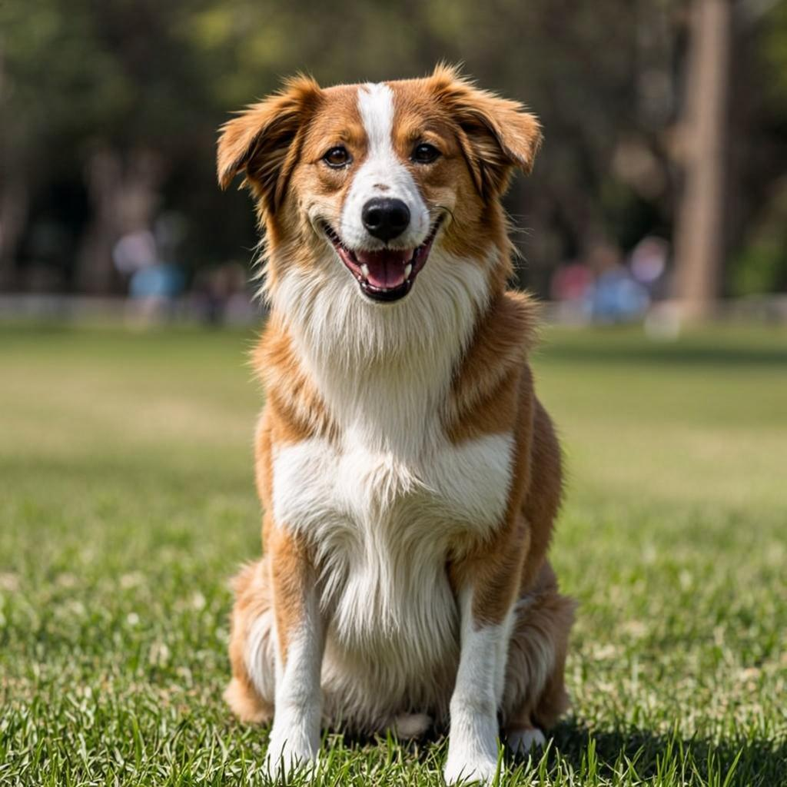
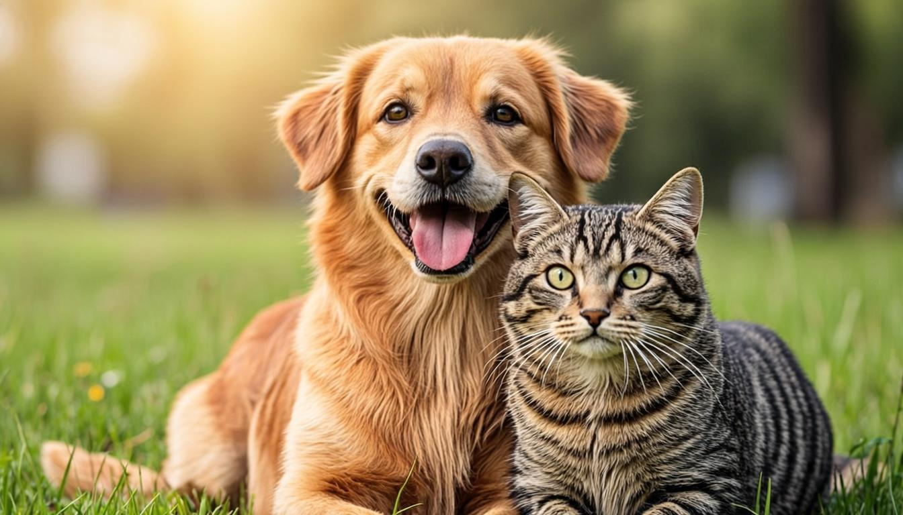
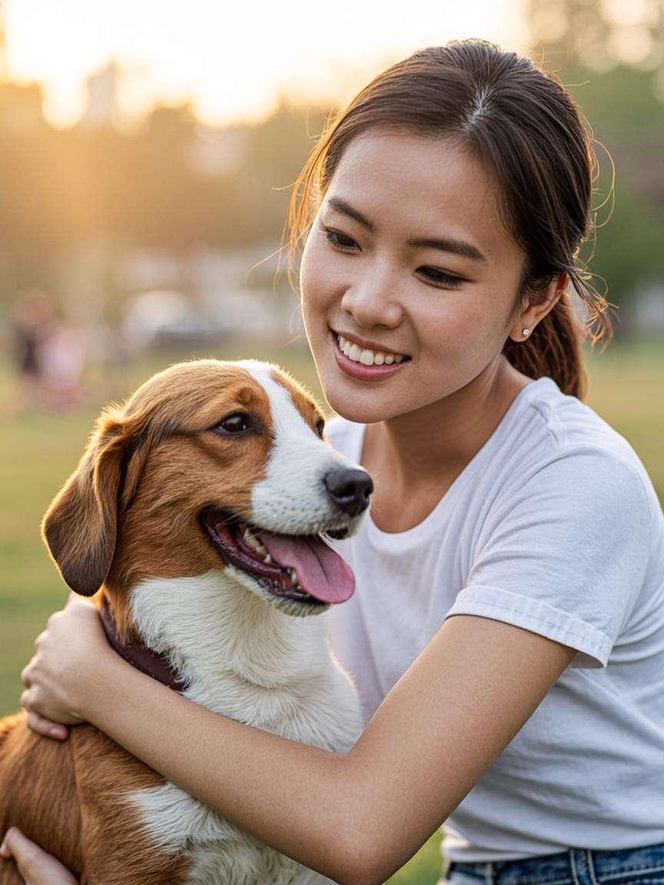
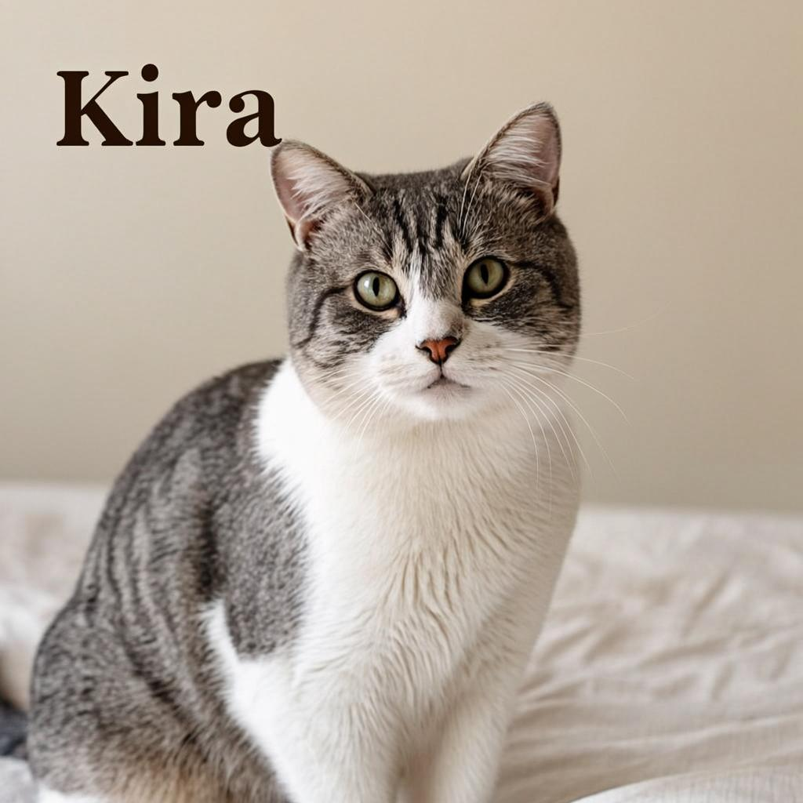
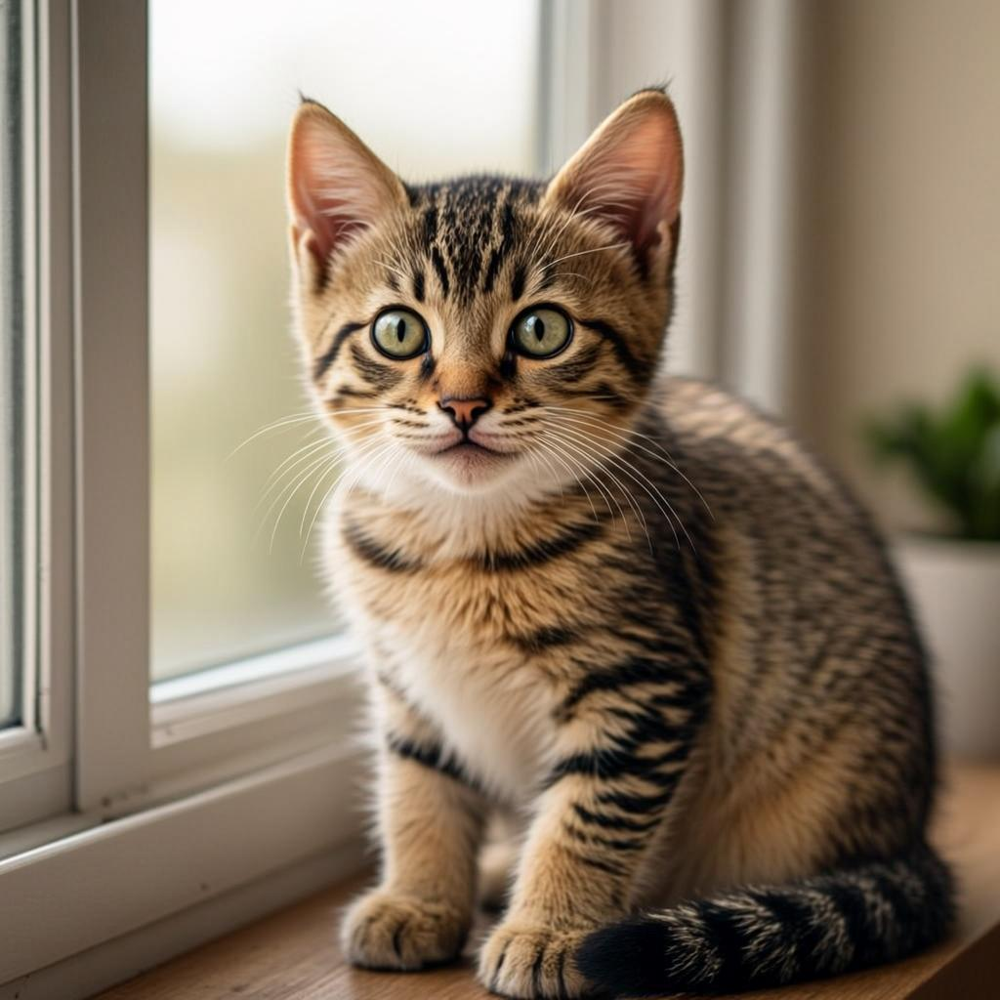
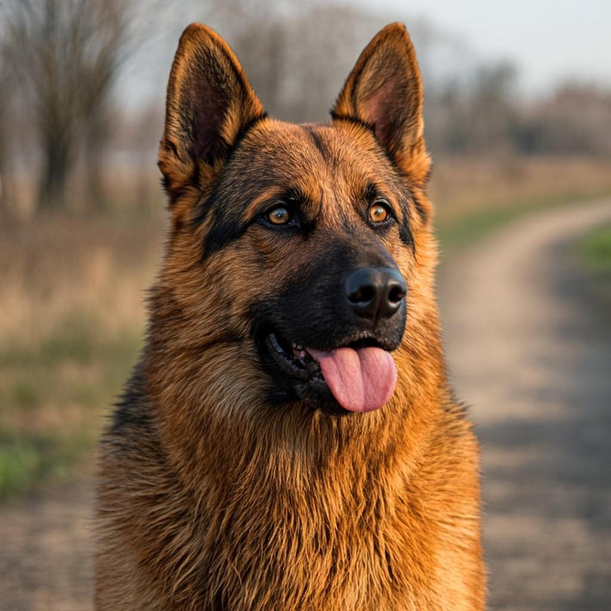
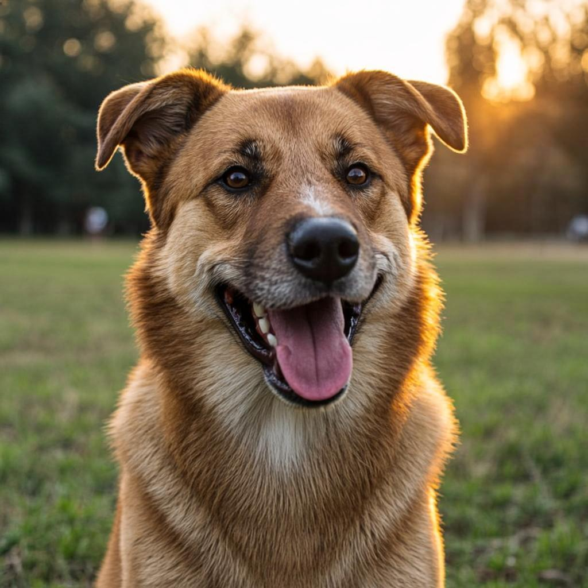
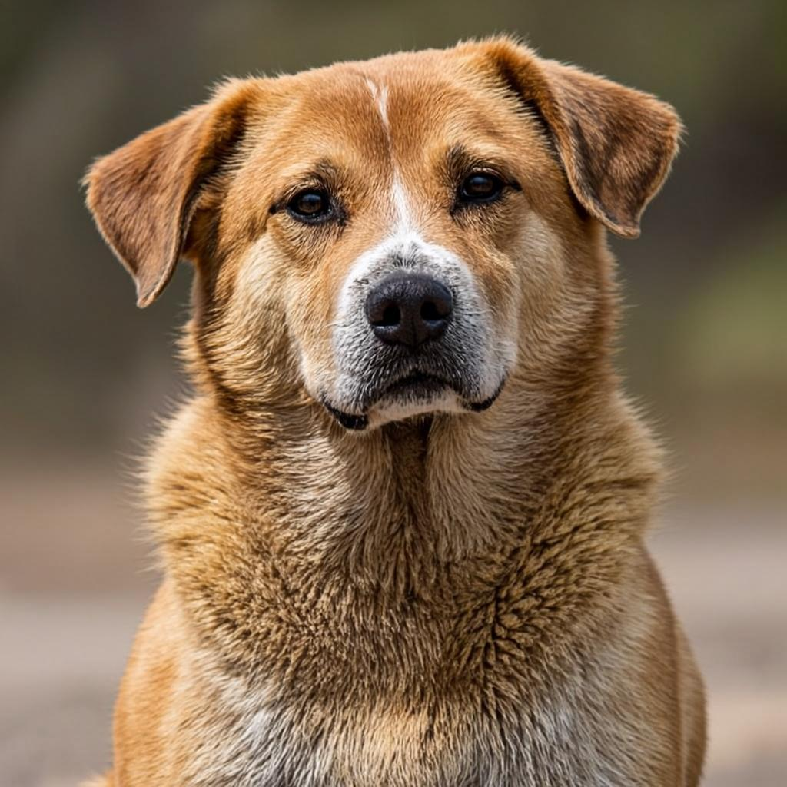

AdopciónLos primeros 30 días: guía para adaptar a tu mascota
Consejos prácticos para que la transición del refugio a tu hogar sea suave y amorosa.
Leer más arrow_forwardEn Miauguau encontramos familias amorosas para animales perdidos o abandonados. Cada adopción es una segunda oportunidad, un gesto que transforma dos vidas.

Listos para un hogar
Conocé a tus nuevos mejores amigos
500+
Mascotas rescatadas
200+
Familias felices
50+
Voluntarios activos
98%
Tasa de adopción
Un proceso simple y amoroso para conectar mascotas con familias que las necesitan. Sin vueltas, sin trabas, con acompañamiento real.
Navegá nuestras mascotas disponibles y encontrá a tu compañero ideal. Filtrá por tamaño, edad y carácter.
Completá el formulario de contacto y te guiaremos en cada paso. Conversemos sin compromiso.
Dale un hogar amoroso y comenzá una nueva vida juntos. Te acompañamos durante la adaptación.

"Llegó a nuestra casa tímida y asustada. Hoy, seis meses después, es la reina del hogar. No imaginamos la vida sin Luna."
María García
Adoptó a Luna · Marzo 2024
Historias reales de familias que encontraron a su compañero perfecto a través de Miauguau.
Adoptar a Luna fue la mejor decisión. El equipo de Miauguau nos acompañó en todo el proceso y hoy tenemos una familia completa.
Max llegó a nuestra vida cuando más lo necesitábamos. Gracias a Miauguau, encontramos al compañero perfecto para nuestros hijos.
Como voluntaria, he visto de primera mano el increíble trabajo que hacen. Cada mascota recibe el cuidado y amor que merece.
Guías prácticas, historias de adopción y consejos de cuidado para que tu mascota sea feliz.

AdopciónConsejos prácticos para que la transición del refugio a tu hogar sea suave y amorosa.
Leer más arrow_forward
SaludPor qué son esenciales, cuándo aplicarlas y cómo cuidar a tu mascota después.
Leer más arrow_forwardNo necesitás ir al refugio para marcar la diferencia. Descubrí cómo aportar.
Leer más arrow_forwardLa concientización es el primer paso para generar un cambio real. Informar sobre el abandono, el maltrato y la importancia de la adopción responsable salva vidas y transforma comunidades.
500+
Mascotas rescatadas
200+
Familias felices
50+
Voluntarios activos
98%
Tasa de adopción
Conocer es el primer paso para actuar. Informate sobre los temas más urgentes que enfrentan las mascotas en nuestro país.
Miles de animales son abandonados cada año en las calles, expuestos al hambre, enfermedades y peligros. Es fundamental denunciar y educar para prevenir esta situación.
La esterilización es clave para controlar la sobrepoblación animal y reducir el número de mascotas en situación de calle. Es un acto de responsabilidad y amor.
Adoptar es un compromiso de por vida. Implica brindar alimento, salud, amor y un hogar seguro. No adoptes por impulso, adoptá con responsabilidad.
El maltrato animal es un delito. Si conocés o presencias algún caso, no guardes silencio. Denunciá y contribuí a crear una cultura de respeto hacia los animales.
La educación es la herramienta más poderosa para el cambio. Enseñar a las nuevas generaciones sobre el respeto y cuidado animal garantiza un futuro mejor.
Ser voluntario marca la diferencia en la vida de cientos de animales. Tu tiempo y dedicación son valiosos para el rescate, rehabilitación y socialización de mascotas.
Cada paso está diseñado para garantizar el bienestar de cada mascota.
Nuestro equipo rescata a animales en situación de calle, brindándoles seguridad y esperanza desde el primer momento.
Brindamos atención veterinaria y cuidado integral para que cada mascota se recupere física y emocionalmente.
Encontramos hogares amorosos para cada mascota, asegurando una compatibilidad real entre la familia y el animal.
Acompañamos a las familias en el proceso de adaptación, resolviendo dudas y asegurando el bienestar del animal.
Un vistazo a la vida en el refugio y a las familias que crecieron gracias a una adopción.


Las preguntas más comunes sobre adopción, rescate y cómo podés ayudar.
La adopción tiene un costo simbólico que cubre la vacunación, esterilización y microchip de la mascota. Este monto varía según el animal y está muy por debajo del costo real de estos servicios.
Necesitás ser mayor de edad, contar con un espacio seguro para la mascota, comprometerte con su cuidado integral y completar nuestro formulario de adopción. Realizamos una visita previa al hogar.
Sí, contamos con un período de adaptación de 15 días. Si por alguna razón no podés quedarte con la mascota, la recibimos de vuelta sin problema. Lo más importante es el bienestar del animal.
Podés registrarte como voluntario a través de nuestra página de contacto. Necesitamos ayuda con paseos, alimentación, limpieza, eventos de adopción y difusión en redes sociales.
Sí, todas nuestras mascotas son entregadas con su esquema de vacunación completo, desparasitadas, esterilizadas y con microchip. Además, cuentan con un chequeo veterinario completo.
Cada uno de nuestros animales rescatados espera una segunda oportunidad. Explorá nuestras mascotas disponibles y comenzá el proceso de adopción para darles el hogar amoroso que merecen.
Mostrando 6 mascotas
Perro · 2 años · Hembra · Mediano
Perro · 4 años · Macho · Grande
Gata · 1 año · Hembra · Pequeño

Perro · 3 años · Macho · Grande
Gata · 2 años · Hembra · Mediano

Perro · 5 años · Macho · Mediano
¿Tenés preguntas sobre adopción o voluntariado? Nuestro equipo de amantes de los animales está acá para ayudarte en cada paso.
Escribinos
Miauguau@gmail.com
Horarios
Lun-Vie: 9:00-18:00
Sáb: 10:00-14:00